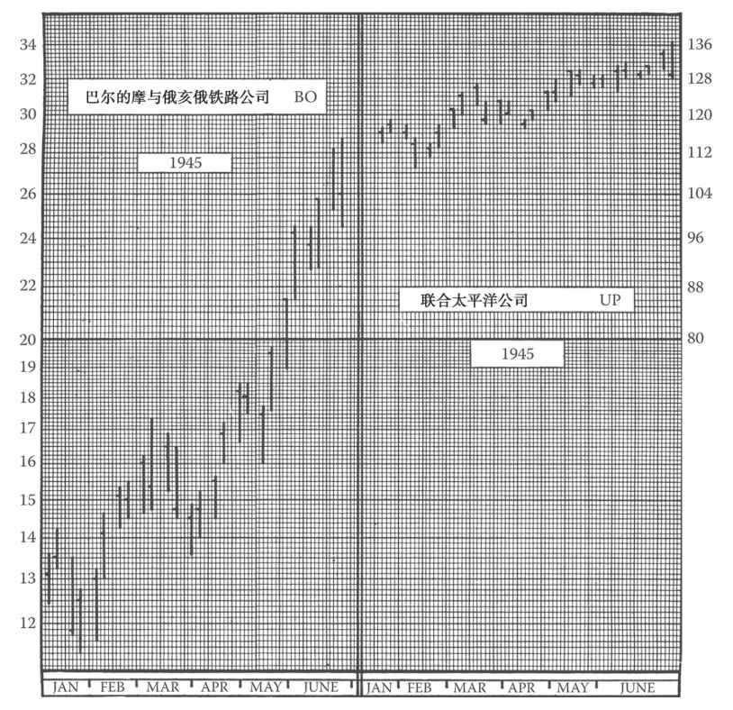

第22章 选择要跟踪绘图的个股：续
在选股过程中，你可能希望在行业分配上尽可能做到多元化。由于对单一行业缺少专业的深入研究，你会尝试在多种行业中选股，如矿业和石油、铁路和化工、酒业和娱乐、航空、公用事业、科技、互联网、生物技术等。这样做也很容易理解，某一特定行业整体会受到一些主要因素的影响，因此行业内大多数的股票都具有类似或相同的形态。例如，当阿利斯·查默斯（Allis-Chalmers）（编者按：或戴尔）的股票走出三角形或其他区域形态，且随后大幅走高时，迪尔（Deere）（编者按：或康柏）、明尼阿波利斯-莫林（Minneapolis-Moline）、哈威斯特（Harvester）和凯斯（Case）也将走出相似的三角或箱体形态，或其他整固形态，并在之后出现类似的上升走势。当申利（Schenley）呈现长线跌势时，你很有可能会发现其他酿酒公司如施格兰（Seagrams）、美国国家酿酒公司（National Distillers）等也出现类似走势（编者按：这些名字今天听上去已经像希腊神话中神祗的名字一样遥远。或者像Ulysses和Leopold Bloom这些名字那么陌生。今天的读者也许会以英特尔、Fairchild和National Semiconductor或者3COM为例。道理是一样的）（参见图22-1）。

图22-1 低价股的涨跌比高价股更剧烈。本图以比例坐标系展示了两只铁路股在相同的6个月内的股价变化。巴尔的摩与俄亥俄铁路公司的股价在这段时间内从12⅜美元涨到28⅞美元，涨幅为16½美元。而联合太平洋公司的股价在这段时间内从109美元涨至137美元，涨幅为28美元。但对比这两个公司的股价涨幅占自身股价的比例，我们发现联合太平洋公司要远小于巴尔的摩与俄亥俄铁路公司。如果你投资1000美元买联合太平洋公司的股票，你会获得23%的资本增值，而如果你投资1000美元在巴尔的摩与俄亥俄铁路公司的股票上，你的资本增值将高达133%，是前者的5倍多
因此，除非你打算在每一个重要行业内都选择几只股票来绘图跟踪，否则不如将个股的选择分散在各行各业。这样，一旦某些行业的股票走势不明朗或交投清淡，其他行业的代表股票可能会表现活跃。（这并不意味着某一行业内所有股票都会齐涨齐跌，某些特殊事件也会对单个公司造成影响，从而带动市场的情绪变化。但主要影响因素一般会作用于整个行业，并引起行业内股票的整体波动。）
因此，在选股时应选取各板块或基础行业中有代表性的股票。但考虑到图表数量有限，我们只能从每个版块中选取一只股票；该如何选取呢？假设我们只能从交通运输板块选取一只股票，但实际上，由于该板块十分重要且规模较大，你中意的股票可能不止一只。（第9版编者按：投资该板块的指数也许更可取，如买入一只相关的ETF。以赛马为例，这就相当于对所有参赛马匹进行下注，而不是只对潜在胜出者下注。两种下注方式并不冲突。）
该选取高价股还是低价股呢？让我们先来研究一下。
通过观察过去股票的走势，你会发现，低价股整体波动幅度大于高价股。一只卖价为5美元的股票可能在几周之内涨到10美元，涨幅达到100%，这样的情况并不少见。但卖价为100美元或200美元的股票却很少能在几天或几周之内实现100%的涨幅。行业的整体走势可能会将5美元的股票价格推升到10美元，但价格为100美元的股票可能只会涨到140美元。很明显，如果投资1000美元购买股价为5美元的股票，组合价值可能会上涨100%，即上涨1000美元，但如果投资同样金额购买股价为100美元的股票，组合的价值只可能会上涨400美元。低价股带来的收益可能是高价股的2.5倍之多。
本书作者整理并统计了大量板块股票在过去较长时间内的浮动情况（参见本书第9版附录A），并建立了股票在不同价位时的相对平均敏感度表格。如果一只股票今天以5美元的价格卖出并出现宽幅震荡，那么当这只股票升至20美元或30美元时，就很难再现大幅的价格震荡。（第10版编者按：这些概念已被贝塔和波动性取代。）
讲到这里，你可能会想到几个问题：难道不应该考虑低价股相对高价股的交易成本吗？（编者按：的确应该考虑。但在互联网经济中，成本可能会被大幅压缩，成本计算也会造成对资源的浪费。谷歌等搜索引擎可以方便我们对价格问题进行深入研究。）
在选择交易的股票价位时，不可随意设定价格限制，还要考虑其他因素。有时也需要权衡利弊，在某些方面做出妥协。处于20～30美元的股票可能适合交易。通常，你可能会认为10～20美元的区间更有吸引力，且希望进行绘图跟踪并买入。你也可能发现股票在30～40美元区间仍存在利好机会。当然了，一只当前价格为10美元的股票明年也有可能变成40美元，反之亦然。鉴于所绘的股票组合不可随时变更，因此在选择价格区间时一定不要过于偏激。如果在同一行业中，其他股票的卖价为15、28或37美元，你的选股价格则不宜过分高于板块中多数股票的价格区间，如选择某只股价为150美元的股票。如前所述，高价股很可能波动不大。另一方面，也不宜挑选版块中价格过低的股票，如在多数股票价格处于10～30美元的版块中购买价格为4美元或2美元的股票。否则图表会出现异常走势，并带来较高的佣金成本。同时，你也可能因此无法利用保证金进行操作。通常，针对不同的股票价位，会设有不同的保证金限制。对低价股来说，保证金的限制会更加严格。（编者按：这些要求取决于美联储的决策，因此投资者务必与自己的经纪商保持密切的沟通。多年以来，保证金要求一般为50%。美联储在20世纪末的股市泡沫中，因未能有效制止股市投机行为而饱受指责。美联储的不作为加剧了股市的动荡。保证金比率的变动应当引起技术分析者的足够重视，否则后果难以料想。）
考虑到以上因素，通常在20～30美元的区间内，你的杠杆效果最佳。你的交易价格可能会降到10～20美元或涨到40美元以上。在40美元以上和10美元以下时，必须有充分的理由你才可进行交易，比如说资金非常充足。因此，有少量杠杆的投资者在构建组合时，最好选择在中间价格区间（10～40美元）的大多数股票，再加上自己特别感兴趣的少量高价股和低价股。
如果你研究一下任何同类型股票的历史交易数据，并且观察的时间足够长，你就会发现，即使是处于同一价格水平的股票，也有完全不同的涨跌特征。你会发现，当大市回调时，有些股票会回调20%（也就是说，假定股价是30美元，这些股票会跌至24美元），而另一些股票会回调50%之多（假定股价还是30美元，这些股票会大跌至15美元）！而且，在一波大市回调中展现出上述差异的这些股票，在其他时期的回调中也会展现出相似的差异。此外，在跌势中回调较小的个股在涨势中的涨幅也会相对较小，而那些在跌势中急跌的个股在牛市中则会暴涨。前文我们提到过，低价股的涨跌比高价股更剧烈。但我们刚刚介绍的内容完全是个股的股价涨跌特征，而且这些特征会持续多年，稳定不变。
需要记住的是，低价股不仅涨得快，跌得也快。如果你投资了一只低价股，不要以为买了以后就万事大吉了。考虑到投资的安全和稳定，最好还是同时买几个稳当的高价股。但出于交易目的，投资者最好能在缓涨缓跌的“蓝筹股”和急涨急跌的低价股之间取得良好的平衡。
例如，我们会发现，在同等价位上，一些投机型股票比其他个股涨跌幅更大。另一方面，我们也发现某些低价股比同等价位的其他股票的涨跌幅要小。一般来说，低价股比高价股的涨跌幅更大，所以这一点可能很难理解。只有将价格水平纳入考量，我们才能发现某只个股的真正特点。了解到一只股票的特点后，我们就可以在其他价格水平上预测该股的股价变化。
我们不太关注涨跌幅不大的个股，关注的是股价变化剧烈的个股。我们可以通过敏感性指数测算出一只股票的基本涨跌力量。读者可以在本书第9版的附录A中找到该方法的详细介绍。（编者按：迈吉在这里提到的“敏感性指数”可以被认为是贝塔（beta）的前身。Beta代表的是个股相较于整个大市的波动性。假设大市的beta是1，而某只个股的beta是1.5，那么大市每变动1美元，这只股票的股价大概变动1.5美元。有关beta的计算公式可以在附录B“资源”中找到，雅虎财经网站finance.yahoo.com上也展示了一些beta的计算结果。）
至此，你已经过滤了那些价格区间不合适和没有足够涨跌力量的股票（这是因为，你要将注意力集中在那些能够通过交易带来利润的股票上）。在剩下的股票中，你还要再次进行筛选。你会发现，虽然有些股票的涨跌幅够大，也有足够的获利机会，但交易量很小。这些股票的技术图表上可能布满缺口，很多交易日都没有买卖数据，而且有时股价上下变化几点却只有几百股的交易量。这些股票的交易量小可能是因为发行规模小，或因为大部分股票被公司或内部人士持有，也可能是有其他原因。投资者会发现很难找到交易这些股票的机会，而且会因为买卖价差而蒙受损失。有时，投资者要卖出500股都很困难，除非大幅降价，自己承担损失；有时股价变动了1～2美元，但伴随的交易量可能只有几百股。这些股票是需要剔除的。如果你构建组合前不了解某些股票的特点，那么最稳妥的做法是剔除那些交易量太小的个股，加入一些更靠得住的股票。
至此，你手上应该只剩下少数几只股票了。这几只股票的共同特点是：价格区间合适、交易活跃、对大市反应灵敏，并且供应量充足。最终要选哪只（或是哪几只）就完全看个人偏好了。
完成一个类型的选股后，你应该着手研究其他类型的股票，比如说汽车股、娱乐股、计算机股（编者按：互联网股）等，直至选出所有想要关注的股票。尽量在你的图表上建立一个完整、均衡的股票组合。（编者按：由于计算机软件、行业指数、ETF和其他指标的出现，这个过程现在已经大大简化了。事实上，投资者可以直接交易平均指数或指数来缓冲风险，而不是交易某个行业的个股。当然，交易平均指数或指数所带来的利润无法高于交易个股的利润，但总比选错了股票好。迄今为止，还从来没有ETF破产。）
此外，如果你不打算构建一个全行业的股票组合，那么有一些行业出现好股的概率比其他行业更大。一般来说，食品烟草业对于大市的波动不及铁路业、酒业和航空业那么灵敏。但投资者也不必过于担心选股的问题。即使直接选择上市股票中排名前50或前100的股票构建组合，你也会发现，这其中至少有25只好股票。在一开始构建组合时，不必过于费力，随着时间的推移，你会逐渐剔除一些股票，加入其他股票，渐渐完善自己的投资组合。
（编者按：值得一提的是，科技股、生物科技股或是其他时下流行的概念，比如说太空酒店和星际旅行，都蕴含着比17世纪的郁金香热潮更大的风险和回报。当选择构建主动型投资组合或是否进行交易时，投资者会根据自己的风险承受能力和回报要求选择是否要加入到这样的热潮中去。有一条著名的格言是这么说的：甲之蜜糖，乙之砒霜。我们在第23章会继续讨论这个话题。）
如果想要进一步简化选择的过程，投资者可以只交易一个或两个投资工具，比如标准普尔存托凭证（SPY）或思柏达道琼斯工业平均指数交易所交易基金（DIA）。如果投资者不仅交易这两个投资工具，还做对冲，那么就很可能跑赢大市。这就是保持简单投资的诀窍。